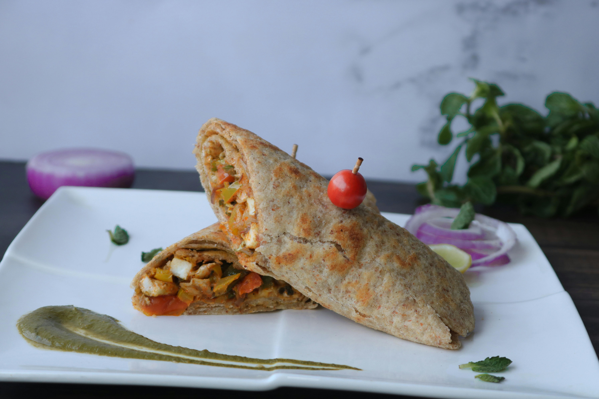

Veggie Wrap
A healthy, colorful veggie wrap loaded with fresh ingredients and flavorful hummus.
Ingredients
- 2 large whole wheat tortillas
- 1/2 cup hummus (any flavor)
- 1 cup baby spinach or mixed greens
- 1/2 cup shredded carrots
- 1/2 cup thinly sliced bell peppers
- 1/4 cup sliced cucumbers
- 1/4 cup sliced red onion
- 1/2 avocado, sliced
- Salt and pepper to taste
- Optional: feta cheese, sprouts, or olives
Instructions
- Lay the tortillas flat on a clean surface.
- Spread a generous layer of hummus over each tortilla.
- Layer spinach, carrots, bell peppers, cucumbers, red onion, and avocado evenly across each wrap.
- Season with salt and pepper to taste. Add optional toppings if desired.
- Roll the tortillas tightly, folding in the sides as you go.
- Slice in half and serve immediately, or wrap tightly in foil for later.
Tips for the Best Veggie Wrap
- Choose fresh veggies: Crisp, colorful vegetables make the wrap more flavorful and satisfying.
- Use a sturdy tortilla: Whole wheat or spinach tortillas hold the fillings better and add nutrition.
- Don’t overfill: Too many ingredients can make the wrap hard to roll.
- Make it creamy: Add a drizzle of tahini or ranch dressing for extra flavor.
- Meal prep: Prep ingredients in advance for quick assembly during busy days.
Nutrition Information
Per wrap:
| Nutrient | Amount |
|---|---|
| Calories | 350 |
| Total Fat | 15g |
| Saturated Fat | 2g |
| Cholesterol | 0mg |
| Sodium | 620mg |
| Total Carbohydrates | 42g |
| Dietary Fiber | 8g |
| Sugars | 4g |
| Protein | 10g |